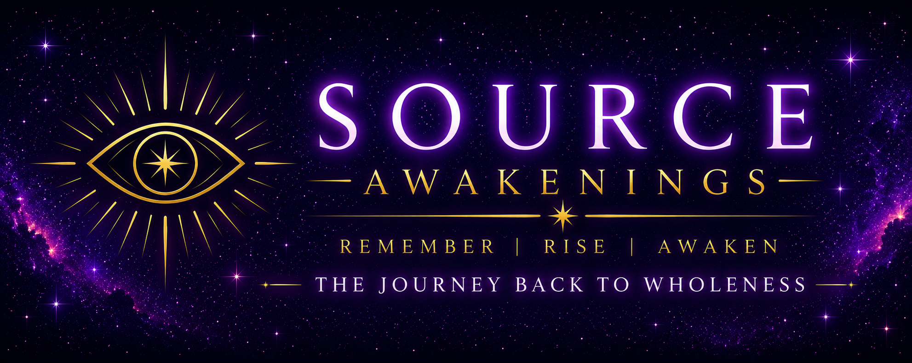

Reflections
Written and recorded reflections that offer a lens into awareness, healing, remembrance, and becoming.
Read Reflections
Source Awakenings is an invitation to observe life through a different lens.
Awakenings are an infinite phenomenon that occur over the entirety of our journey back to wholeness. It is the premise of why we start to become true conscious beings with depth. We start to see things differently and in a more unique way, sometimes blending what we once knew with what we now know.
Written and recorded reflections that offer a lens into awareness, healing, remembrance, and becoming.
Read ReflectionsExplore the lenses that shape the journey back to wholeness, from programming and identity to remembrance and expanded awareness.
Explore the JourneyDiscover the books and future works that carry the Source Awakenings mission into deeper exploration.
View Books